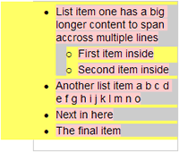
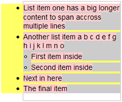
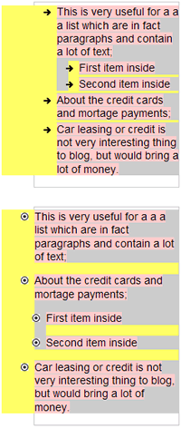
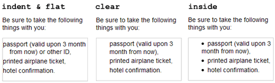

HTML list have become one of the most used HTML elements for marking-up various semantic content structures — navigation, comments and even image galleries.
This article will explain and show you how to style lists inside blog posts, articles or other basic HTML documents.
Before we start, it is necessary to understand the importance of using specific HTML tags <ul> and <ol>, instead of simple numbering (like 1., 2. or •, ») for building lists. By applying content a semantic structure, we emphasize the relationships between different content elements. In case of lists we are able to imply that there is a certain relationship between all of the list members, which is possibly described by the paragraph introducing the list. It also helps screen reader users for whom the total number of items is announced before the rest of the list.
Default list rendering in standards aware browsers and Internet Explorer
Let’s look at the default rendering of ordered <ol> and unordered <ul> lists by Web standards aware browsers (with Gecko, Webkit or Opera rendering engine) and Internet Explorer (IE).

It turns out that IE applies default left side margin to the list container (<ul> and <ol>) while standards aware browsers apply left side padding. These differences in list rendering force us to set both padding and margin of <ul> to 0 and continue to work only with styling <li> tag.
Another thing we notice is that list bullets or numbering becomes invisible in IE with the left side margin set to 0.
Getting the list rendering consistent among all browsers
To solve the invisible bullet problem described above, its a good idea to use relative positioning of list containers <ul> and <ol>. By doing so, we will be able to create much more advanced list style later without repeating most of the CSS.
CSS for simple lists
ul, ol {
margin:auto -3em 1em 0;
padding:0;
position:relative;
left:-3em;
overflow:hidden;
}
li {
margin-top:0.25em;
margin-bottom:0.25em;
}
ul ul, ul ol,
ol ol, ol ul {
margin-left:1em;
padding-left:0;
}
ul li, ol li {
margin-left:5em;
}
li li {
margin-left:1em;
}
Internet Explorer specific CSS
To fix IE’s ability to do the math correctly, we have to enable hasLayout property for all of our <ul> and <ol> tags. This is done by using conditional comments:
ul, ol { height:0; overflow:visible; }
ul, ol { height:1%; }
Output

List is now rendered equally in all browsers. For illustration purposes a yellow background is applied to the list container <ul>, gray border shows the dimensions of <ul>, while list items <li> have gray background.
Flat lists for more content per list item
Sometimes you have multiple lines of content per list item and then it might be reasonable to align the lists with the rest of the content in order to sustain the vertical flow of it.
CSS for flat lists
.flat li {
margin-left:3em;
}
.flat li ul, .flat li ol {
margin-left:1em;
padding-left:0;
}
.flat li li {
margin-left:0;
}

Notice the little amount of CSS, but more importantly that it is rendered equally among all of the browsers and we can still use the default bullet styles instead of images.
However, sometimes one might want to use custom style list bullets. This can be done using the list-style-image property in CSS.
Lists with custom style bullets

Note: don’t forget to remove the line break after list-style-image: to get it working.
CSS:
ul.bullet-a li {
list-style-image:
url('bullet-image-a.png');
}
ul.bullet-b li {
list-style-image:
url('bullet-image-b.png');
}
Although the alignment of the list image is not pixel perfect among all of the browsers, it is more than satisfactory if the height of the bullet image doesn’t exceed 10 pixels. One might suggest to use background of <li> tag as a list bullet image, but this would brake the ability to combine multiple CSS identifiers per list, like <ul class="flat bullet-a"> because of inherited margin settings.
All the small details
Notice that the spacing between list items in the last example (rounded image bullets) is larger than the default one (arrow image bullets). This enhances readability and separates list items similarly to paragraphs. So here is the final set of CSS styles to suite most of the needs:
.spaced {
margin-bottom:0;
}
.spaced ul, .spaced ol {
margin-top:1em;
}
.spaced li {
margin-bottom:1em;
}
.indent li {
padding-left:1em;
text-indent:-1em;
}
.inside li {
list-style-position:inside;
}
.clear li {
list-style-type:none;
}
You can see that one of the previous examples already utilizes the “spaced” styling, while “indent”, “inside” and “clear” might benefit from a few examples:

All of CSS combined & list style cheat-sheet
- View all of the list style examples in your browser.
- View the resulting CSS as a seperate file (bullet images: )
- Download a list style CSS classname cheat-sheet (.pdf) which you can print and use as a reference when composing your articles, blog posts or other HTML documents.


Screenshot showing the use of various HTML list styles

Internet Explorer specific HTML and CSS
ul, ol { height:0; overflow:visible; }
ul, ol { height:1%; }
Few suggestions:
- Bullet image height preferably should not exceed 10 pixels. Lower image height makes them look better in Internet Explorer. If you want bullet images to be transparent, save them as transparent GIF or 8-bit PNG files.
- You might find it useful to apply this styling only to your post content, which can be easily done by prepeding the identifier of your post wrapper (like
.postor.article) to all of the list styles. The end result would be something like.post ul, .post ol {}.
Excellent post Kaspars. I’m in the process of re-familiarising myself with the fine points of web typography and this is going to come in really handy.
Excellent indeed! Thanks for sharing.
Excellent resource, Kaspars. The detailed description of how the various browsers treat lists by default is fantastic — I’ll be visiting it again!
I posted an article on styling unordered lists this morning… there must be something going around. :) I’d love to get your feedback!
Pretty neat. I’m still learning the list stuff, but this helps a lot. :)
Your example page is almost completely broken in IE7. Maybe because of a typo in your head section:
<!–[if gt IE 6]><style>ul, ol { height:1%; }</style>< ![endif]–>
There should be no space in the final ;< ![endif]–>
Great post, I’m going to put this into action on a current project. I really appreciate when authors take the time to outline differences between browsers when writing posts like this — without that, posts like these would be pretty useless.
Personally I prefer resetting lists in general and just styling them individually, makes it easier to style menus and content lists that way.
I have found that if you want to get everyone playing nicely it also helps to reset the property for
text-intent: 0;
Excellent post, this helped me a lot. Thank you taking the time to share your findings with everyone!
I’ve abandoned the use of unordered lists altogether whenever possible. They never display consistently across all browsers.
I surround content in a div, then then put each line item in another div with a bullet background image that doesn’t tile and is positioned correctly with respect to the line. Line-height can help too for line items that break the line. It sounds complex but in fact it’s much easier and consistent across all compliant browsers. Here’s an example:
div.list div {padding: 3px 0px 3px 7px; background-image:url(‘http://www.whatever.com/image.gif’); background-repeat:no-repeat; background-position:0 9; line-height:13px;}
Once you get the styles down it’s as easy as:
<div class=”list”>
<div>Item 1</div>
<div>Item 2</div>
<div>
George, I agree that this might be a simple solution for cross-browser consistency, but this way one looses all the semantics. I guess it wouldn’t really matter for an end-user, but search engines might consider lists a better representation of a site navigation as they group the elements and make them semantically relevant. Or it’s maybe my inner standardista thinking.
I popped into this page to find a solution to increase the spacing between the list items.
Yes, you have it at the bottom. But how to use it?
I copied the “.spaced” part into my style.css but nothing happened.
This link, https://kaspars.net/examples/list-example/, does not work…would you please fix it??
One thing that I’am not find a solution for is the line (empthy) over the list. I often want a heading, then list all the items under, without a empthy line… Show example below, no space between “Like this:” and “- Hi”.
Like this:
– Hi
– Hello
Hans, you can display
<li>elements inline, using the following CSS:ul { display:inline; } li { display:inline; }Creating well-formed lists are sometimes overlooked. Still very relevant. Thanks!!
Thanks for the css styling info, I do wish there were more examples of doing more complex lists, such as lists with in lists, unique styling of lists.